A single-storey house in the Yucatecan hacienda tradition, set on 906 m² at Hacienda Teya, a few minutes east of Mérida — four bedrooms, a pool at the centre of the garden, a large beamed hall for entertaining, and twenty solar panels already on the roof.
Everything is on one level, arranged around the water. A stone-edged channel runs the length of the lawn to a rock cascade at one end, and the pool sits off an arcaded portal with pasta-tile floors. The roofs are beamed and tiled in the traditional way, and the walls are painted in the deep pinks and ochres that belong to this part of Yucatán; carved wooden doors and ironwork windows carry the same hand through the house.
Inside, the living and dining areas are open to one another and to the garden, with natural light on both sides. The kitchen is practical and well laid out, opening to the covered terrace. The principal bedroom has a dressing closet and its own full bathroom; three further bedrooms look onto the pool and share the second full bathroom.
The hall is what sets the property apart: a wide room under an exposed timber roof, glazed along one side, with its own service counter — built for family gatherings and celebrations, and large enough to be put to commercial use, subject to the applicable permits and land-use rules. A covered laundry room, a storeroom and two parking spaces complete the plan.
Outside
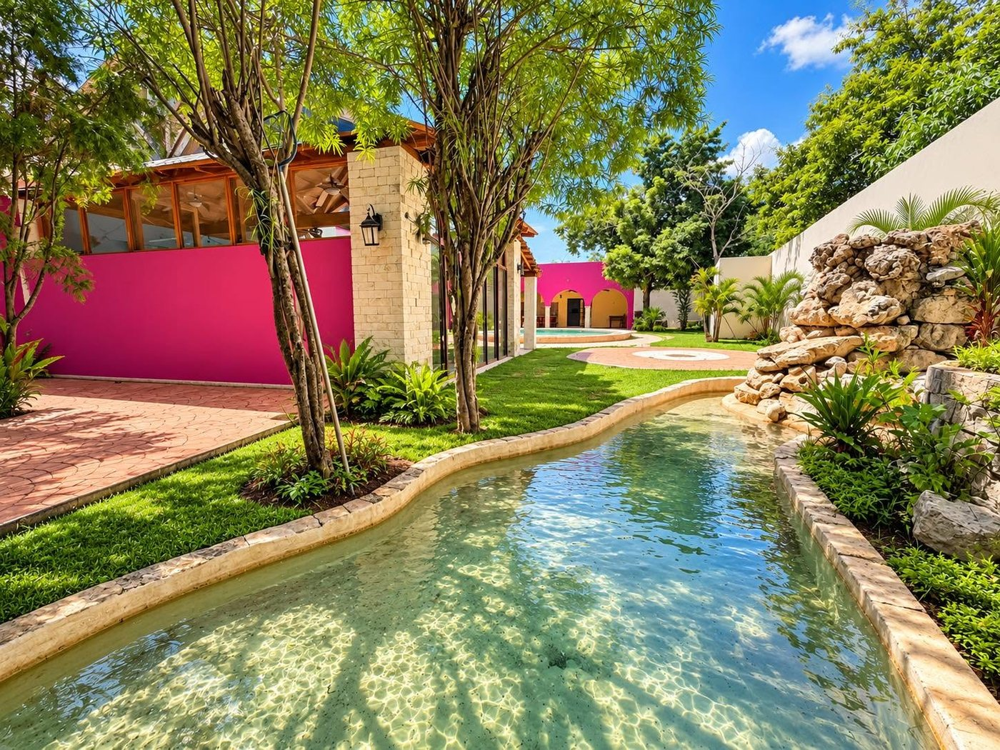
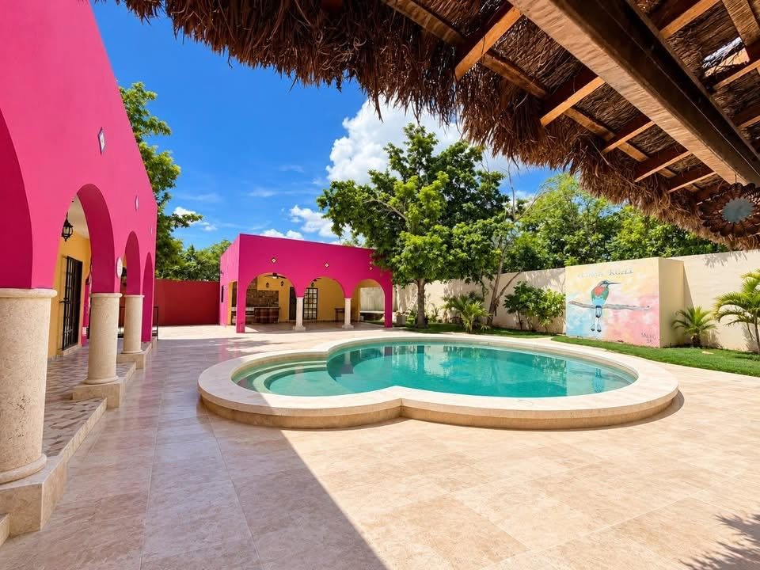
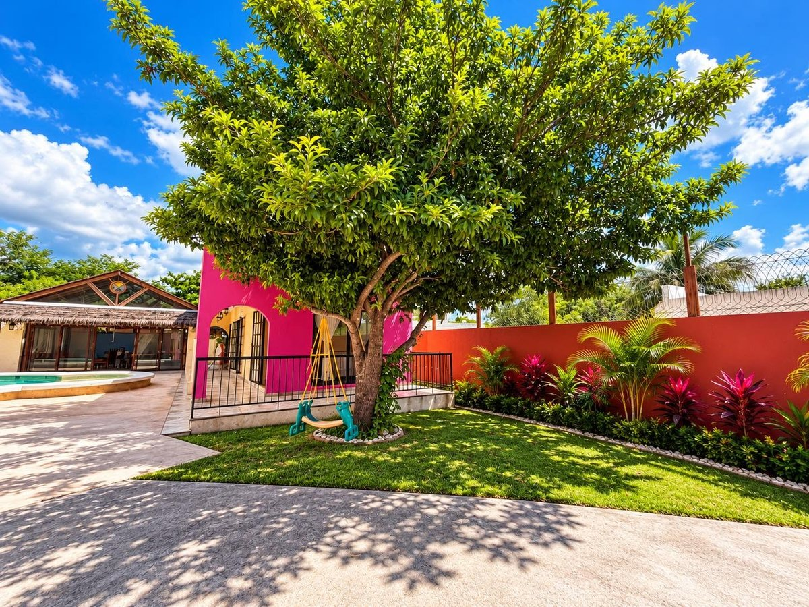
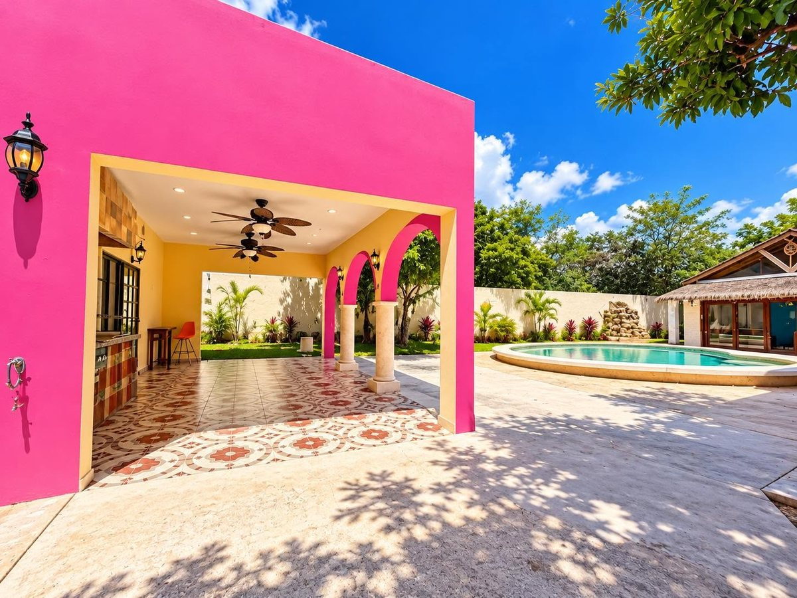
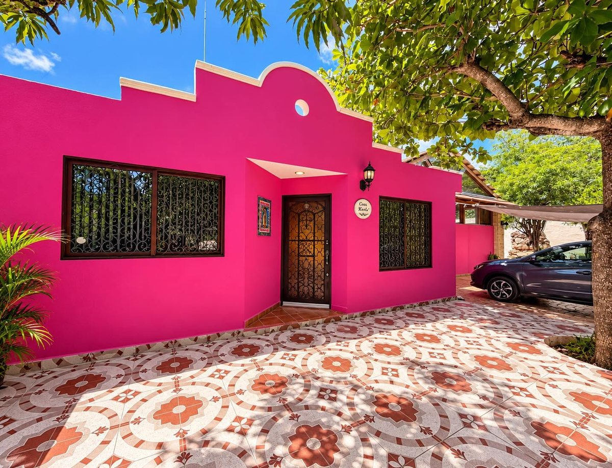
The garden is built around water: a stone-edged channel with its cascade, and the pool off the portal.
The hall
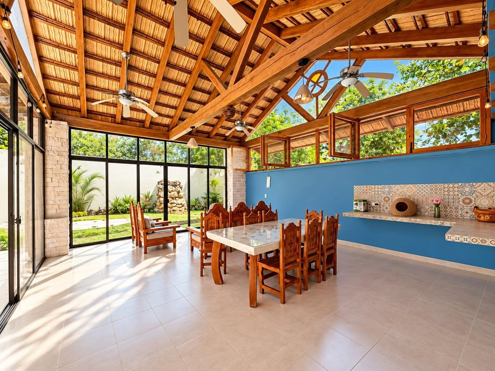
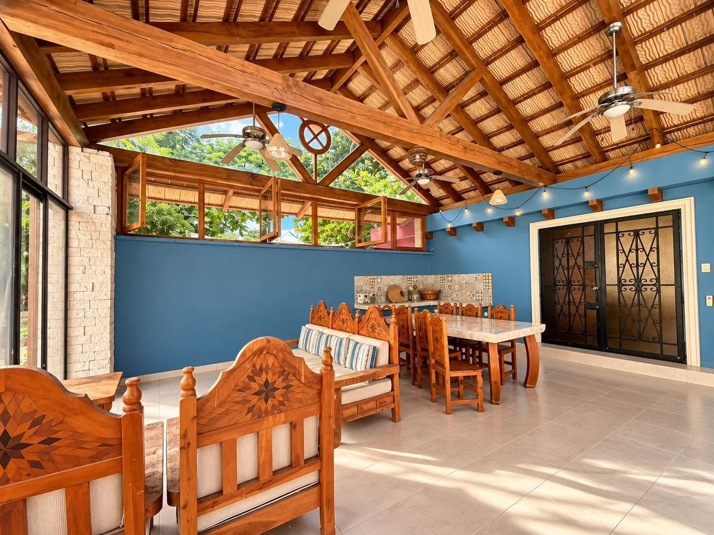
A room built for gatherings — and large enough for a commercial use, subject to permits.
Inside
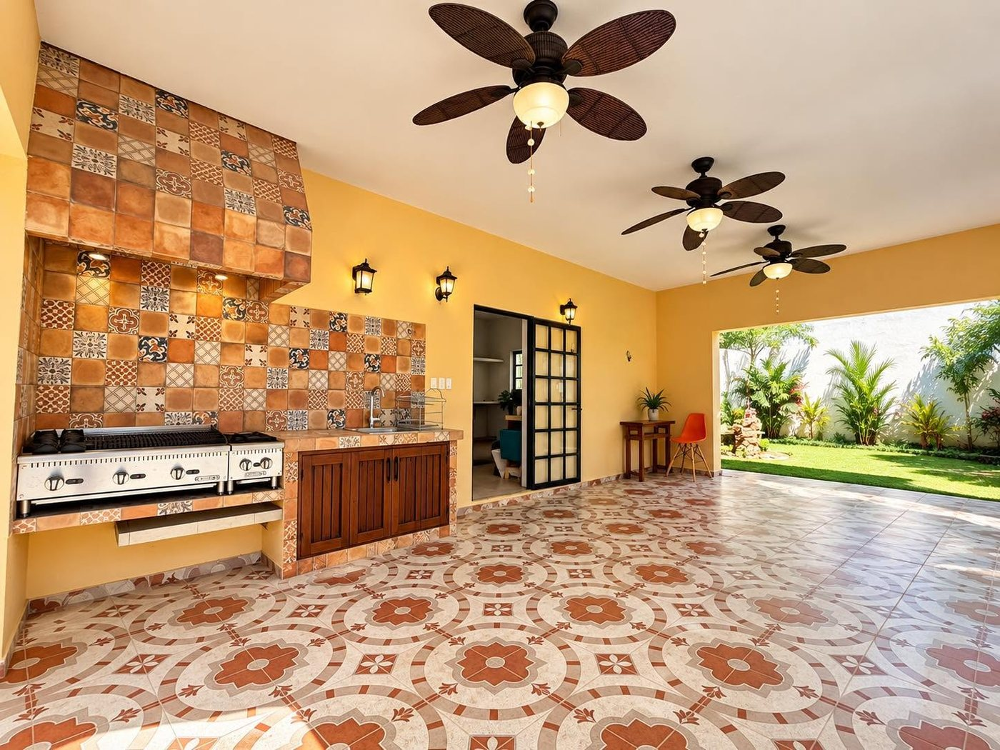
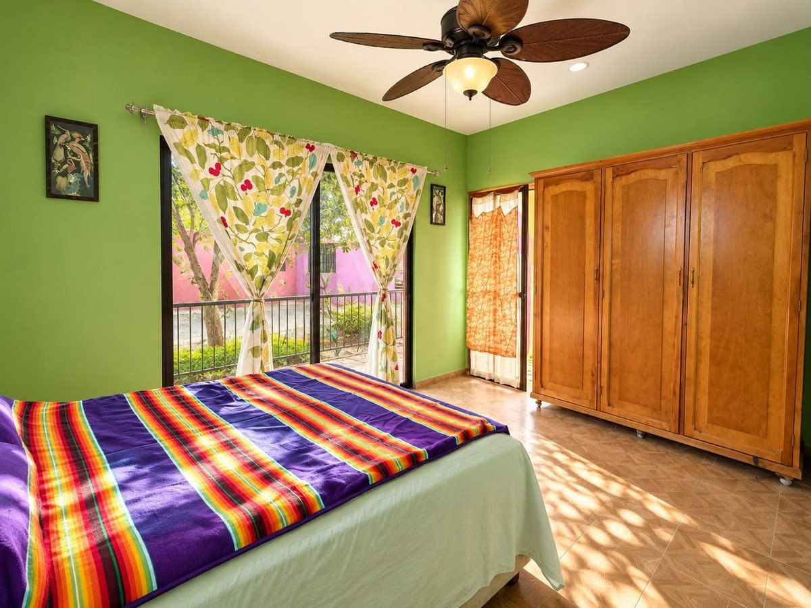
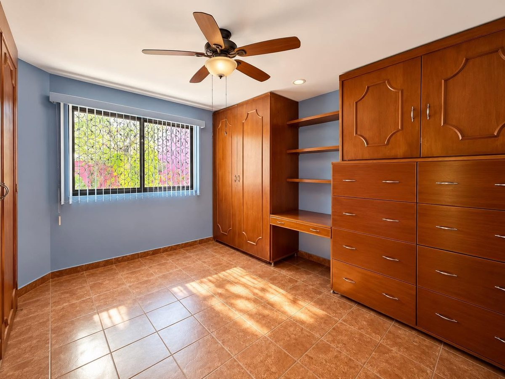
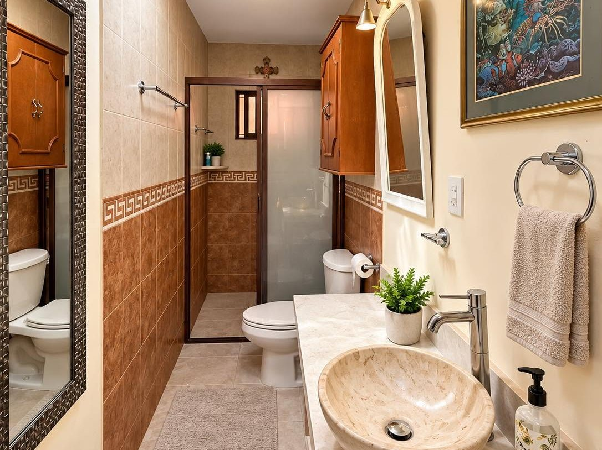
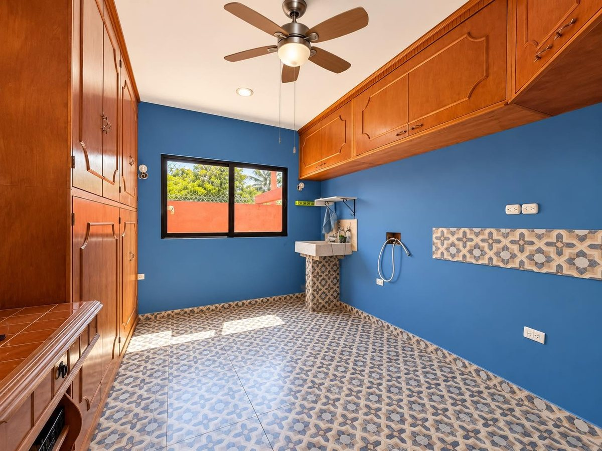
Finishes & features
- Four bedrooms, two full bathrooms
- All on a single storey
- Principal bedroom with dressing closet and en-suite
- Three bedrooms facing the pool
- Open living and dining areas
- Large hall for events and gatherings
- Swimming pool
- Stone cascade water feature in the garden
- Garden with fruit trees
- 20 solar panels installed
- Arcaded portal with pasta-tile floors
- Exposed timber and beamed roofs
- Carved wooden doors and ironwork windows
- Covered laundry room
- Storeroom
- Two parking spaces
- Room at the back to extend
The land
The lot measures 906 m², 20.62 m across the front and 40.68 m deep, with 306 m² built. That leaves most of the plot as garden: lawn under mature shade trees, fruit trees, the pool and its surrounding deck, and a clear stretch of land at the back with room for an extension, a recreational area or a further building.
Hacienda Teya
Hacienda Teya sits on the Mérida–Cancún federal highway in the municipality of Kanasín, east of Mérida and outside the Periférico, taking its name from the seventeenth-century hacienda and its well-known restaurant. The Tren Maya’s Teya station — the line’s station for Mérida — is a short drive away, and the corridor around it has drawn steady commercial and logistics investment since the line opened. Mérida itself is close enough to be an easy run in, while the setting is rural and quiet.